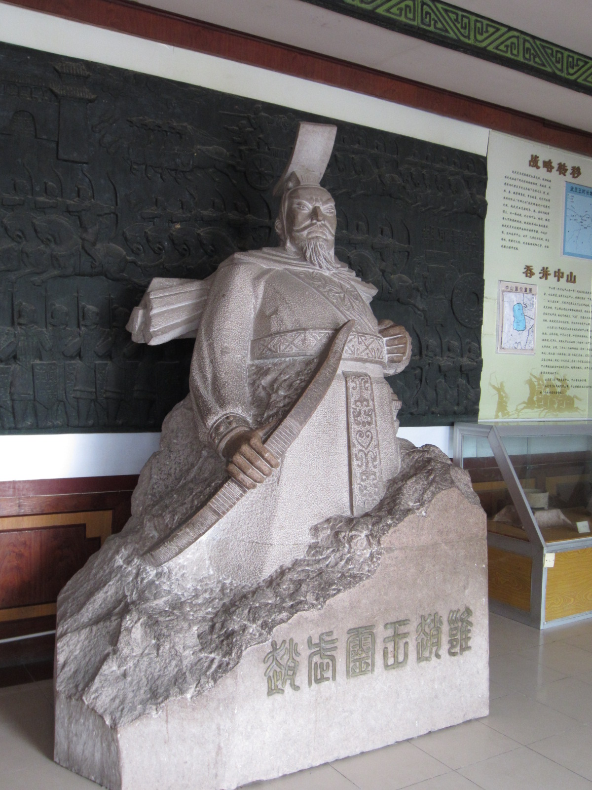
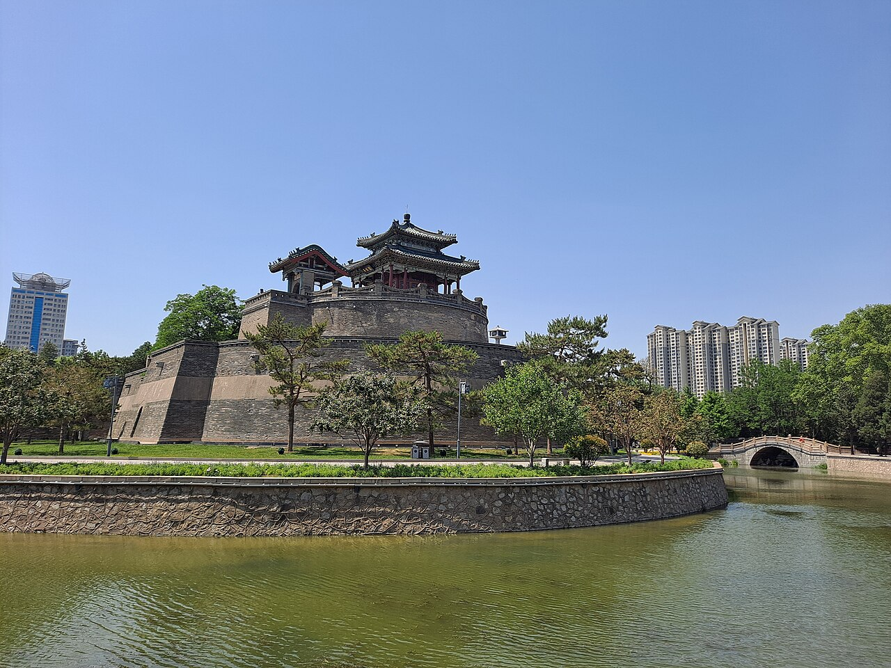
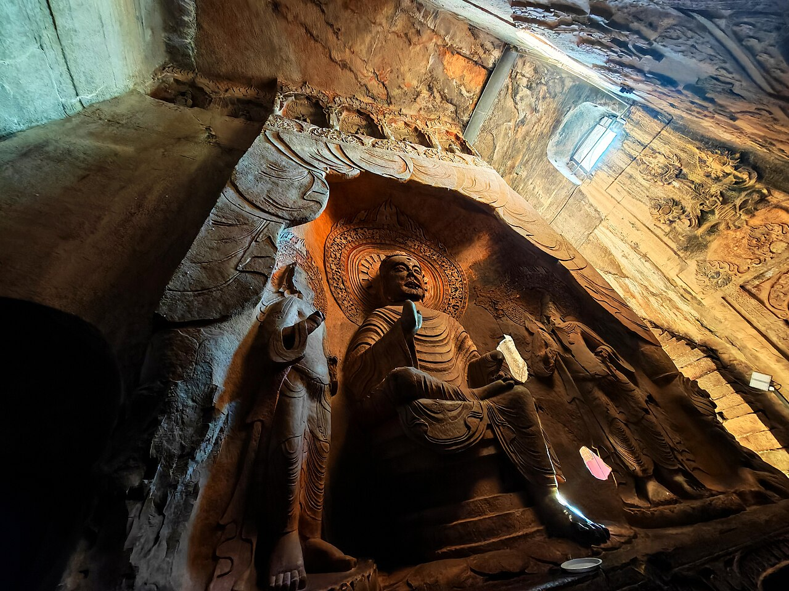
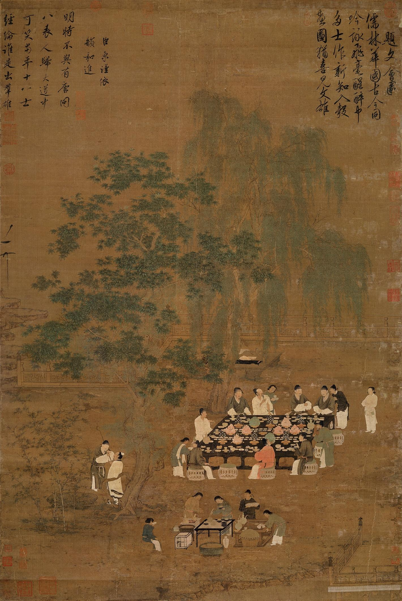

其一 / 01
焚诏
对使者引烛焚诏，附奏曰：「但道臣沆以为不可。」其议遂寝。
真宗夜遣使持手诏欲有所封拜，李沆当使者面焚毁诏书，只回一句「臣沆以为不可」，皇帝遂作罢。宰相封驳之权，在他手里成了一种极安静的坚持。
《宋史·李沆传》南相公庄 · 北宋名相李沆故里
民国《肥乡县志》：「南相公庄为李文靖公故里」
Original sources and quotations remain in Chinese.
隋唐时期，此地名叫河凤乡。北宋年间，村中李氏家族几代为官，李沆官至同中书门下平章事，古称宰相为「相公」，村庄由此更名相公庄，又按方位分为南、北相公庄。一个地名，把一千年的政治史留在了华北平原上。
据杨亿《武夷新集》所载《李沆墓志铭》，李沆于景德元年归葬「河南府洛阳县贤相乡积润里」，可证民国《肥乡县志》「李文靖墓，旧在城西门外」之说未确。本站据此立说，不将墓葬系于本村。
肥乡属邯郸。这片土地上，战国的丛台与胡服骑射、北齐的响堂山石窟、明清的广府古城层层叠压。它们不是李沆的遗迹，却构成了「相公庄」这个名字所处的地域文脉——一个村庄之所以能记住一位宰相，背后是一整片善于记事的乡土。



时代说明 / A NOTE ON DATING 武灵丛台、赵武灵王与响堂山石窟分属战国赵、北齐等时期，均早于李沆（947—1004）数百年乃至千余年；广府古城现存城墙主要为明清遗存。此处列作故里所在地域的历史文脉，并非李沆生活时代的场景或遗迹。图像为版式统一作了灰度、降饱和与暗化处理，原图见下方来源链接。
李沆，字太初，洺州肥乡人。太平兴国五年登进士第，历将作监丞、通判潭州、翰林学士、礼部侍郎兼太子宾客，辅导太子赵恒。宋真宗咸平初拜同中书门下平章事、监修国史，卒于任上，享年五十八，谥文靖，配享真宗庙庭。

史无写真，故不立像
李沆（947—1004）没有可信的传世肖像，坊间所见各类「李沆像」多为后世想象或现代绘制。本站不以想象画冒充实像，仅以同时代的宋人绘画呈现他所处的士大夫世界；认识这个人，仍要回到《宋史》本传、杨亿所撰《李沆墓志铭》与民国《肥乡县志》的原文。
Li Hang (947–1004) has no surviving authenticated portrait. This site does not present an imagined likeness as a historical image.
进士及第 太平兴国五年，授将作监丞、通判潭州，召直史馆。
知制诰 · 翰林学士 太宗尝言「李沆、宋湜，皆佳士也」；试文后赐钱百万，又别赐三十万俾偿其债（据《李沆墓志铭》）。
辅导储君 以礼部侍郎兼太子宾客，特诏用师傅之礼，太子先行下拜。
拜相 自户部侍郎、参知政事拜同中书门下平章事，监修国史，累加门下侍郎、尚书右仆射。
卒于任 诏辍视朝五日，赠太尉、中书令，谥文靖；后配享真宗庙庭，宋仁宗时从祀孔子庙庭。
李沆为相，主张清静无为、务行故事，尤注意戒除人主骄奢之心；史称其为相「光明正大」，故有「圣相」之誉。他的政治遗产不在兴作，而在克制。
对使者引烛焚诏，附奏曰：「但道臣沆以为不可。」其议遂寝。
真宗夜遣使持手诏欲有所封拜，李沆当使者面焚毁诏书，只回一句「臣沆以为不可」，皇帝遂作罢。宰相封驳之权，在他手里成了一种极安静的坚持。
《宋史·李沆传》（语译）「我也想好好待客，可北有辽、西有党项，都是心腹之患，我得把时间用来思量如何防备，哪有工夫听人自夸功绩、求取奖赏。」
宾客盈门而终日寡言，时人戏称「无口匏」——没嘴的葫芦。他对弟弟李维解释：边患未解，无暇听人自陈功绩、求取奖赏。沉默不是傲慢，是把时间留给国事。
宋人笔记 · 地方文史辑录寇准屡荐丁谓，沆不用。曰：「顾其为人，可使之在人上乎？」
寇准数度举荐丁谓，李沆始终不用，并断言此人不可居人上。后丁谓得势，果排挤寇准。识人之明，成为后世论「圣相」最常引的一笔。
《宋史·李沆传》 · 后世论评村中并无李沆故居、墓葬实体遗存，真正可传的是文献本身。本站把底本逐一标注版本与出处，原文保留中文，逐条附注释与白话对照——这是全站最硬的一块，也是「故里」二字最可靠的凭据。
李沆生平、官历、谥赠、配享的最基本底本，「焚诏」「不用浮薄新进喜事之人」等条目皆出于此。下列为节录示意，正式版将依中华书局点校本逐字校对。
全文连标题计 2793 字，历代《肥乡县志》均未收录。所载世系、三代封赠、葬地洛阳、眷属与交游，可补史之缺、纠志之谬；亦记「归葬于河南府洛阳县贤相乡积润里」。
李沆之父李炳墓志，连标题 848 字，全文待录入。与李沆墓志对读，可复原李氏家族自曾祖李礼、祖李滔至李炳、李沆的世系，是「相公庄李氏几代为官」的直接证据。下方先录杨亿所撰《李沆墓志铭》中追述其父的一段。
「南相公庄为李文靖公故里」一句，是村名与人物关系最直接的方志依据；1984 年《肥乡县地名志》亦记「宋宰相李沆生于此村，为纪念他，故称相公庄」。
全部文献均标注版本、卷次与出处 · 点击条目展开节选 · 原型演示，正式站将提供全文检索与逐句注释
2017 年肥乡区农工委在公开答复中明确「大寺上镇南相公庄村也是宋代名相李沆的故里」，并正在美丽乡村建设中挖掘李沆文化元素。数字馆既是一份公开记录，也是一份征集启事。
位于大寺上镇西北部，西临邯山区；主要农作物为玉米、小麦及棉花。与北相公庄、大西韩、柳庄、逯家堡等村相邻。
史料越辩越明。我们长期征集以下材料，凡采录者均在文献页署名录与出处。本站不设在线投稿与评论区，征集以线下登记和邮件方式进行。